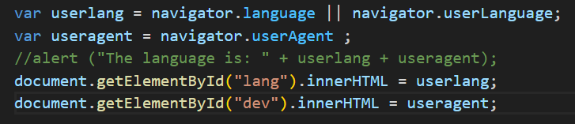

JavaScript lessons
nr.1 What is JavaScript?JavaScript is a programming language that we use to make our pages dynamyc and functional.
nr.2 How to add JavaSript to your project
Inserting JavaScript can be done with the script tag. Here in the external version as a file with the name "test.js". All JavaScript will be in this file.

Inserting JavaScript can be done with the script tag. Here in the internal version where the code is directly in the webpage.

You also can put both Versions in to the body , but only on to the bottom or on to the top and only once!
nr.3 JavaScript loading strategies
When you don´t use async or defer , loading HTML will be interrupted , with loading and executing JavaScript.
When you use async , HTML will get loaded at the same time as JavaScript , but JavaScript will still interupt loading HTML while executing.
When you use defer , HTML will get loaded at the same time as JavaScript , but JavaScript will execute when loading HTML is done.
nr.4/5 JavaScript Syntax,Comments and how to output JavaScript
Comments:
You can use //. It will ignore everything after this in the same line.Or you use /*. It will ignore everything what you write between /* and */. But when you write /* you HAVE to close it with */!
functions and Syntax:
There are simple functions like alert,forEach or console.log.You use alert , when you want a message to pop up when your webpage gets opened.You use forEach , when you want change something.And you use console.log , which is quite the same as alert, when you want to write a message in to the console, which you can open with a right click in to the backround of the Website under inspect -> console. With prompt you can let a input field pop up. With confirm youcan let a question pop up which will ask you for a cancel or ok. It will give back true or false. There still is console.warn and console.error .
click here to test
nr.6 The variables let and const.
how to name a variable
You can give any variable (f.ex. named Box) a value, by writing Box = "The Rock". You also can use let by writing let Box = "Shazam".
But you are not allowed to give your variable a value two times with let or else it will come to a error.
const
You should only use const when you want your variable not to be able to be changed..
Variable naming rules
1. The variable name must only have letters, or the symbols $ and _.
2. The first character can´t be a number, and there should be no spaces.
3.The variable name can´t be a reserved keyword in the JavaScript language.
nr.7 Javascrpt Data Types
There are primitive Data types like Boolean, String, Number, BigInt, Undefined and Null ,that are simple and only carries one value. And then there is the Non-primitive Data type, object (arrays, functions and objects) .

nr.8 Arithmetic Operators
There are 8 Arithmetic Operators called Addition(+), Subtraction(-), Division(/), Multiplication(*), Modulus(%), Exponentiation(**), Increment(++) and Decrement(--). You are probably familiar with the first four ones, but if you are not with the last four, it´s fine.
Maybe you are asking yourself why does 5%2 equals 1,5**3 is 125 and why we have to write console.log(score) three times . 1.The reason is because Modulus only gives the Remainder as an Answer. 2.5**3 is the same as 5 to the power of 3. 3.Actually you only have to write two times, but the only reason why wrote it three times is to explain that if you write console.log(score) ,99 will stand in the console. In the second Line you calculate it , but only give the current value. In the third line yuo give the Increment value of score. The same happens for ++ instead of -- with difference that the answer is 98 and not 100. Now there still is Perator Precedence which only means the order the Operators will fall in. That said Bodmas or Klapupostri.
nr.9 Assignment Operators
There are the 5 Assignmment Operators , =-,=+,=/,=*,=%. You´ll use them to add or take away numbers. for example:

nr.10 Numbers
You can say "let num = 3" , but you can also write decimal numbers so "let newnum = 3.16".
Now, if you want to know what data type the value of your variable is , use console.log(typeof your variable). After doing that you´ll find the name of the data type in the console. Now, there is a short way of writing very big or very small numbers.We could assign the value one million like this:"let mill = 1000000" or in a short way like this:"let mill= 1e6". Now if you don´t understand it you will hopefully do that in a second.So, 1 says what the first number is and the e6 how many zeros there are after the first number.
So when I say "let prize = 5e4" and "console.log(prize)" there should be 50000 standing in the console.
Do you rember when we said there are two main types of Data in javascript? These are Primitives and Objects.Objects have Methods and Properties . So Methode DO something and Properties ARE something. Primitives have built in Objects also called global objects. So number, strings and boolean all have a build in counterparts such as strings have the string object that they can access, numbers have the number object that they can access, booleans have the boolean object that they can access
Also, when I say "let num = 3" and "num = num.toUpperCase" it will cause and error , since num is a number so it only has access to number methods not string methods.
nr.11 Number Methods
As soon a variable has a number as the value, it automaticly has access to the number methods.
So first we will write const PI = 3.141597. If we now say const Num = PI.toFixed(3) and then console.log this we will get 3.142
Why? That´s because toFixed is rounding the last Number.
Next is toPrecision. It´s pretty much the same with the difference to toFixed that it counts all numbers, not only the numbers after the ,.
And when we say let mill=1000000 and after that const newill = mill.toExponecial we will get 1e6. .
Extra Lesson
Today we will be looking at how to find which browserlanguage and which device you are using.
Right now you are using the language: lang and the device: dev
Here you can see my JavaScript code needed to get the output above:
